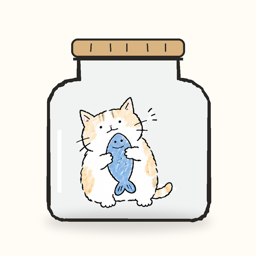

MochidoroShort version: everything stays on your device. We don't collect anything.一句話版本：所有東西都留在你的裝置上，我們不蒐集任何資料。ひとことで言うと：すべてあなたの端末の中にあります。私たちは何も収集しません。한 줄 요약: 모든 것은 내 기기 안에만 있어요. 우리는 아무것도 수집하지 않아요.Kurz gesagt: Alles bleibt auf deinem Gerät. Wir erheben keine Daten.
Nothing. Mochidoro has no accounts, no sign-in, no analytics, no advertising and no third-party SDKs. We never see your focus sessions, notes, stickers or settings. There is no server of ours for this data to go to.
Everything you make in Mochidoro (focus sessions, daily progress, stickers, the notes you write, tags, paw coins, your scrapbook and your settings) is stored on your iPhone.
If iCloud is turned on for Mochidoro in your iPhone settings, Apple syncs that data to your other devices through your own private iCloud database. It is encrypted by Apple, tied to your Apple Account, and we cannot read it. Turning iCloud off for Mochidoro stops the sync. Deleting the app's iCloud data in Settings › Apple Account › iCloud › Manage Storage removes it from iCloud.
Your timer and today's numbers are shared between the iPhone app, the Watch app and the widgets on your own devices only, so they can show the same thing.
Mochi Club (a subscription or a one-time purchase) and paw-coin packs are sold through Apple's App Store. Apple handles payment; we never receive your name, address or payment details. You can view, change or cancel a subscription any time in Settings › Apple Account › Subscriptions. Purchases are subject to Apple's Licensed Application End User License Agreement.
Mochidoro is rated 4+ and collects no personal information from anyone, including children.
Delete the app to remove everything stored on your phone. If iCloud sync was on, also remove Mochidoro's data in Settings › Apple Account › iCloud › Manage Storage.
Privacy laws such as the GDPR in Europe and the CCPA in California give you the right to see, correct or delete personal data a company holds about you. We don't collect or store any personal data, so there is nothing of yours with us to see, correct or delete: your data stays with you and in your own iCloud. Questions are welcome on the support page.
If this policy changes, the new version will be posted here with a new date. Questions: see the support page.
什麼都不蒐集。Mochidoro 沒有帳號、不用登入、沒有分析工具、沒有廣告、沒有任何第三方 SDK。你的專注紀錄、筆記、貼紙和設定，我們都看不到，也沒有任何屬於我們的伺服器會收到這些資料。
你在 Mochidoro 裡產生的一切（專注紀錄、每日進度、貼紙、寫下的筆記、標籤、貓掌幣、手帳和設定）都存在你的 iPhone 上。
如果你在 iPhone 設定裡替 Mochidoro 開啟 iCloud，Apple 會透過你自己的 iCloud 私人資料庫把資料同步到你的其他裝置。這些資料由 Apple 加密、綁定你的 Apple 帳號，我們無法讀取。關掉 Mochidoro 的 iCloud 就會停止同步；到「設定 › Apple 帳號 › iCloud › 管理儲存空間」刪除 Mochidoro 的資料，就會從 iCloud 移除。
計時器和今天的數字只會在你自己的裝置之間（iPhone App、Watch App、小工具）共用，讓它們顯示同樣的內容。
Mochi Club（訂閱或一次買斷）和貓掌幣包都透過 Apple 的 App Store 販售。付款由 Apple 處理，我們不會收到你的姓名、地址或付款資料。你隨時可以在「設定 › Apple 帳號 › 訂閱項目」查看、更改或取消訂閱。購買適用 Apple 的授權應用程式使用者授權合約。
Mochidoro 的分級是 4+，不會向任何人（包括兒童）蒐集個人資料。
刪除 App 就會移除手機上的所有資料。如果之前有開 iCloud 同步，請另外到「設定 › Apple 帳號 › iCloud › 管理儲存空間」移除 Mochidoro 的資料。
歐盟的 GDPR、台灣的個人資料保護法等隱私法規，讓你有權查詢、更正或刪除公司持有的你的個人資料。我們不蒐集也不儲存任何個人資料，所以我們這裡沒有任何你的資料需要查詢、更正或刪除：你的資料只在你自己手上和你的 iCloud 裡。有任何問題，歡迎到支援頁面找我們。
政策若有更動，會在這一頁公布新版本並更新日期。有問題請看支援頁面。
ありません。Mochidoro にはアカウントもログインもなく、アナリティクス、広告、サードパーティ SDK も使っていません。集中の記録、メモ、ステッカー、設定を私たちが見ることはなく、それらを送る先のサーバーも存在しません。
Mochidoro で作られるもの（集中セッション、毎日の進み具合、ステッカー、書いたメモ、タグ、肉球コイン、スクラップブック、設定）はすべてあなたの iPhone に保存されます。
iPhone の設定で Mochidoro の iCloud をオンにすると、Apple があなた自身のプライベート iCloud データベースを通じて他の端末に同期します。データは Apple によって暗号化され、あなたの Apple アカウントに紐づき、私たちには読めません。Mochidoro の iCloud をオフにすると同期は止まります。「設定 › Apple アカウント › iCloud › ストレージを管理」で Mochidoro のデータを削除すると iCloud から消えます。
タイマーと今日の数字は、あなたの端末同士（iPhone アプリ、Watch アプリ、ウィジェット）の間でのみ共有され、同じ内容を表示するために使われます。
Mochi Club（サブスクリプションまたは買い切り）と肉球コインパックは Apple の App Store で販売されます。決済は Apple が行い、氏名、住所、支払い情報が私たちに届くことはありません。サブスクリプションは「設定 › Apple アカウント › サブスクリプション」でいつでも確認、変更、解約できます。購入には Apple のライセンス契約（EULA）が適用されます。
Mochidoro のレーティングは 4+ で、お子さまを含め誰からも個人情報を収集しません。
アプリを削除すると端末上のデータはすべて消えます。iCloud 同期をオンにしていた場合は、「設定 › Apple アカウント › iCloud › ストレージを管理」からも Mochidoro のデータを削除してください。
EU の GDPR や日本の個人情報保護法などの法律は、企業が持つあなたの個人情報の開示・訂正・削除を求める権利を定めています。私たちは個人情報を一切収集・保存しないため、開示・訂正・削除の対象となるあなたの情報は私たちの手元にありません。データはあなたの手元と、あなた自身の iCloud にだけあります。ご質問はサポートページからどうぞ。
このポリシーを変更する場合は、新しい日付とともにこのページに掲載します。ご質問はサポートページをご覧ください。
없습니다. Mochidoro에는 계정도 로그인도 없고, 분석 도구, 광고, 서드파티 SDK도 없어요. 집중 기록, 메모, 스티커, 설정을 우리는 볼 수 없고, 그 데이터가 갈 우리 서버도 없어요.
Mochidoro에서 만든 모든 것(집중 세션, 하루 진행 상황, 스티커, 쓴 메모, 태그, 발바닥 코인, 스크랩북, 설정)은 내 iPhone에 저장됩니다.
iPhone 설정에서 Mochidoro의 iCloud를 켜면, Apple이 나만의 개인 iCloud 데이터베이스를 통해 다른 기기로 동기화합니다. Apple이 암호화하고 내 Apple 계정에 묶여 있어 우리는 읽을 수 없어요. Mochidoro의 iCloud를 끄면 동기화가 멈추고, 「설정 › Apple 계정 › iCloud › 저장 공간 관리」에서 Mochidoro 데이터를 삭제하면 iCloud에서 사라집니다.
타이머와 오늘의 숫자는 내 기기들(iPhone 앱, Watch 앱, 위젯) 사이에서만 공유되어 같은 내용을 보여줍니다.
Mochi Club(구독 또는 한 번 결제)와 발바닥 코인 팩은 Apple App Store를 통해 판매됩니다. 결제는 Apple이 처리하며, 이름, 주소, 결제 정보는 우리에게 전달되지 않아요. 구독은 「설정 › Apple 계정 › 구독」에서 언제든지 확인, 변경, 취소할 수 있습니다. 구매에는 Apple의 표준 최종 사용자 사용권 계약(EULA)이 적용됩니다.
Mochidoro의 등급은 4+이며, 어린이를 포함한 누구에게서도 개인정보를 수집하지 않습니다.
앱을 삭제하면 휴대폰에 저장된 모든 것이 지워집니다. iCloud 동기화를 켰었다면 「설정 › Apple 계정 › iCloud › 저장 공간 관리」에서도 Mochidoro 데이터를 지워 주세요.
EU의 GDPR, 한국의 개인정보 보호법 등은 기업이 보유한 내 개인정보를 열람, 정정, 삭제할 권리를 보장해요. 우리는 어떤 개인정보도 수집하거나 저장하지 않기 때문에, 열람하거나 정정, 삭제할 내 정보가 우리에게는 없어요. 데이터는 내 기기와 내 iCloud에만 있어요. 궁금한 점은 지원 페이지로 문의해 주세요.
이 방침이 바뀌면 새 날짜와 함께 이 페이지에 게시됩니다. 문의는 지원 페이지를 참고해 주세요.
Keine. Mochidoro hat keine Konten, keine Anmeldung, keine Analyse-Tools, keine Werbung und keine SDKs von Drittanbietern. Wir sehen weder deine Fokuszeiten noch deine Notizen, Sticker oder Einstellungen. Es gibt keinen Server von uns, an den diese Daten gehen könnten.
Alles, was du in Mochidoro anlegst (Fokuszeiten, Tagesfortschritt, Sticker, deine Notizen, Labels, Pfotenmünzen, dein Buch und deine Einstellungen), wird auf deinem iPhone gespeichert.
Wenn iCloud für Mochidoro in den Einstellungen deines iPhone aktiviert ist, synchronisiert Apple diese Daten über deine eigene, private iCloud-Datenbank mit deinen anderen Geräten. Sie ist von Apple verschlüsselt, an deinen Apple Account gebunden, und wir können sie nicht lesen. Schaltest du iCloud für Mochidoro aus, stoppt die Synchronisierung. Unter Einstellungen › Apple Account › iCloud › Speicher verwalten kannst du die iCloud-Daten der App löschen.
Dein Timer und die Zahlen des Tages werden nur zwischen der iPhone-App, der Watch-App und den Widgets auf deinen eigenen Geräten geteilt, damit überall dasselbe angezeigt wird.
Der Mochi Club (ein Abo oder ein Einmalkauf) und Pakete mit Pfotenmünzen werden über den App Store von Apple verkauft. Apple wickelt die Zahlung ab; wir erhalten weder deinen Namen noch deine Adresse oder Zahlungsdaten. Ein Abo kannst du jederzeit unter Einstellungen › Apple Account › Abonnements ansehen, ändern oder kündigen. Für Käufe gilt die Endbenutzer-Lizenzvereinbarung von Apple für lizenzierte Apps.
Mochidoro ist ab 4 Jahren freigegeben und erhebt von niemandem personenbezogene Daten, auch nicht von Kindern.
Lösch die App, um alles zu entfernen, was auf deinem iPhone gespeichert ist. War die iCloud-Synchronisierung an, entferne außerdem die Daten von Mochidoro unter Einstellungen › Apple Account › iCloud › Speicher verwalten.
Da wir keine personenbezogenen Daten erheben oder speichern, gibt es bei uns nichts, worauf du zugreifen, was du berichtigen oder löschen lassen müsstest. Deine Daten liegen allein bei dir und in deiner iCloud. Bei Fragen erreichst du uns über die Hilfeseite.
Ändert sich diese Erklärung, veröffentlichen wir die neue Fassung hier mit neuem Datum. Fragen? Schau auf die Hilfeseite.